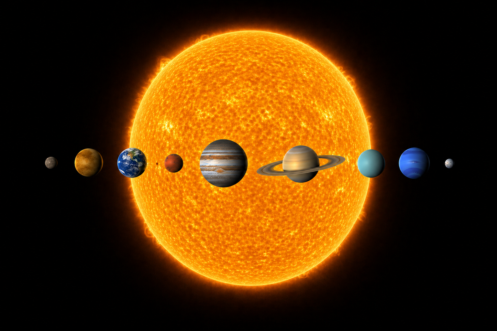
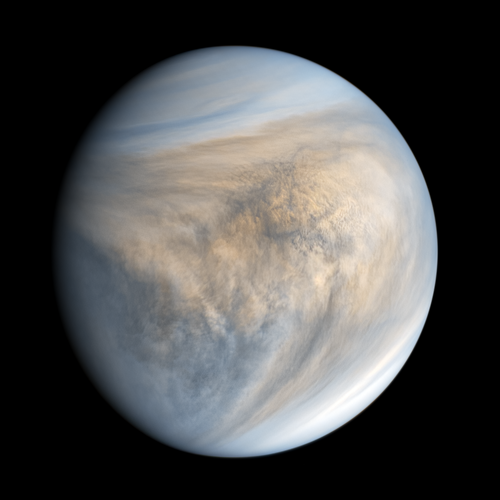
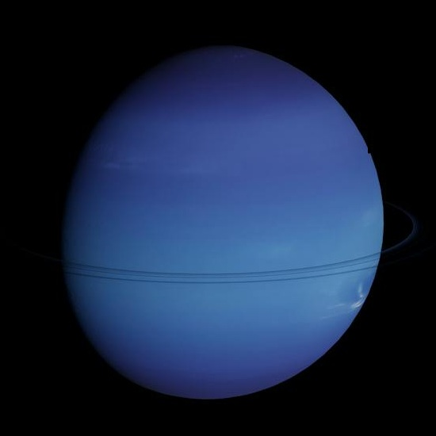
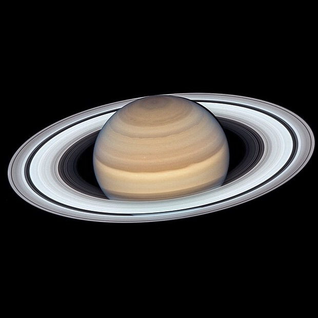

A day on Venus is longer than a year on Venus. It takes 243 Earth days for Venus to complete one slow rotation on its axis (a day), but only 225 Earth days to orbit the Sun (a year). Because of its slow, backwards rotation, the Sun rises and sets only twice in a Venusian year.

Uranus is uniquely tilted at roughly 98 degrees, causing it to rotate on its side and "roll" around the sun in a 84-year orbit, unlike the upright spin of other planets. This extreme orientation, likely caused by a massive collision with an Earth-sized object, leads to 42-year seasons of continuous sunlight or darkness.

On Saturn's moon Titan, the atmosphere is so thick and the gravity is so low that a human could fly by flapping artificial wings attached to their arms.
"Space isn't remote at all. It's only an hour's drive away, if your car could go straight upwards."
- Sir Fred Hoyle, Astronomer